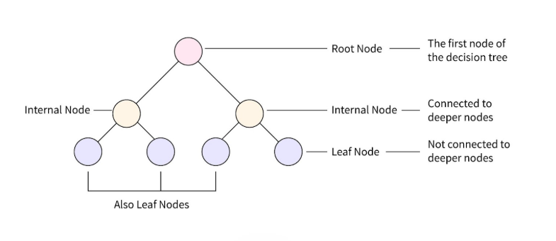
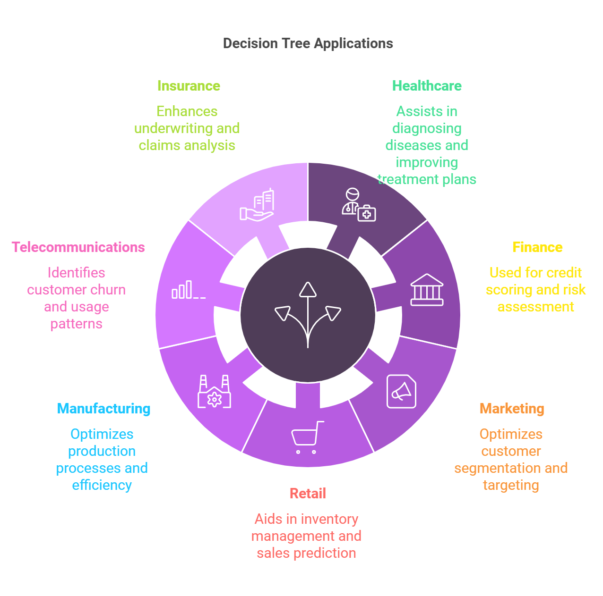
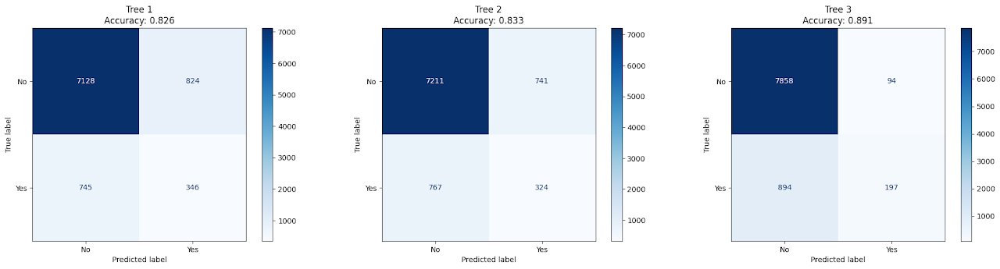
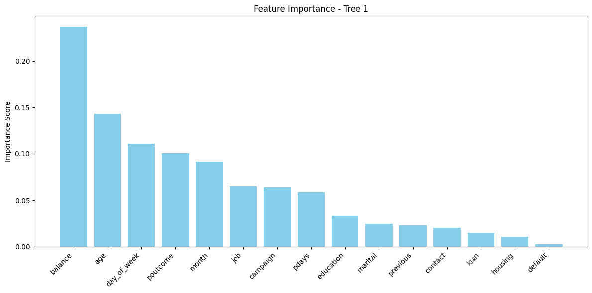
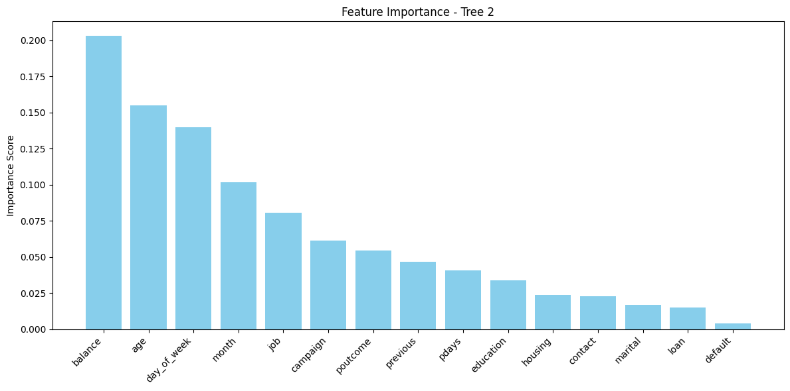
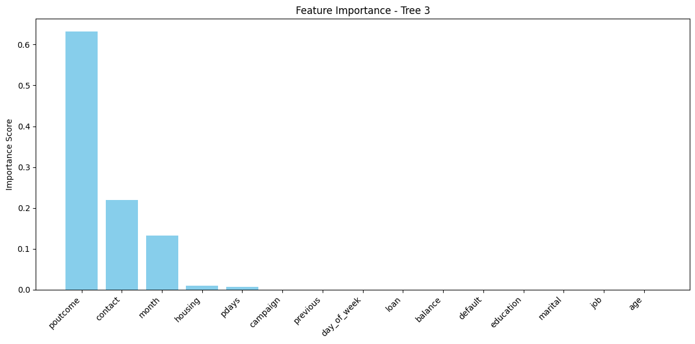
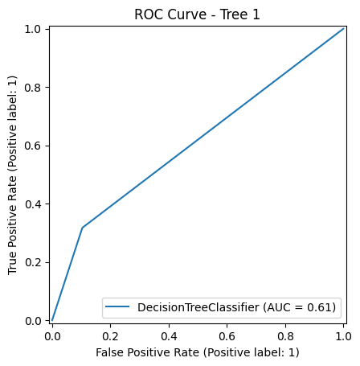
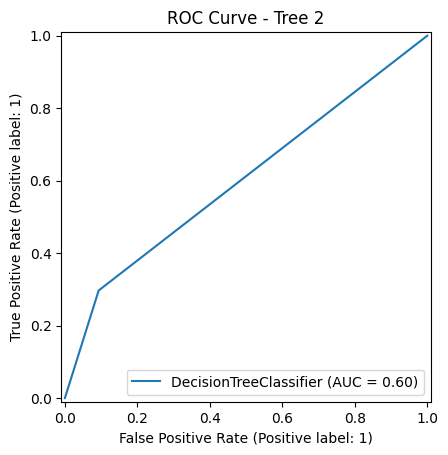
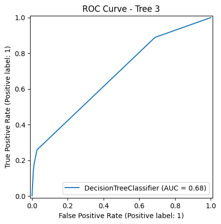
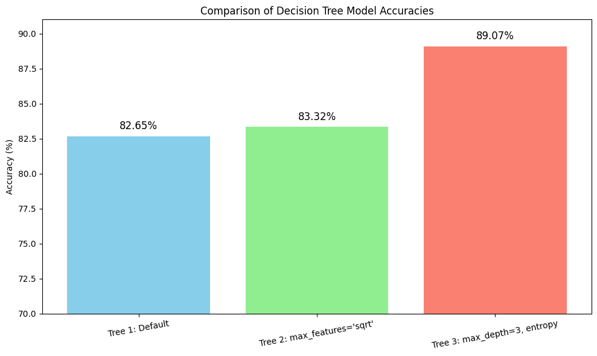

A Decision Tree is a simple yet powerful machine learning algorithm used for both classification and regression tasks. It models decisions using a tree-like structure where each internal node represents a question or condition on a feature, each branch represents an outcome of that condition, and each leaf node represents a final prediction. The model learns by splitting the data based on the feature that best separates the classes, making it easy to interpret and visualize how predictions are made. Decision Trees are known for their transparency, speed, and ability to handle both numerical and categorical data.
How does a Decision Tree work?
The Decision Tree algorithm works like a series of yes/no questions that help make predictions. Imagine trying to decide whether a customer will subscribe to a term deposit. Instead of guessing, the algorithm creates a “tree” where each question narrows down the possibilities. These questions are based on patterns found in the data, such as whether the customer was contacted in a certain month or how they responded to a previous campaign.
Training the model means feeding it past data so it can learn which questions to ask and in what order. The algorithm looks through all the available information and finds the features that do the best job of separating customers who said "yes" from those who said "no." At each step, it picks the most useful question, splits the data accordingly, and continues doing this until it reaches a decision. The final outcome appears at the bottom of the tree, known as the “leaf,” where the model makes its prediction.
Once trained, the tree can take in new customer information and follow the same path of questions to reach a prediction. For example, if a new customer was contacted in August, had no housing loan, and responded positively in the past, the tree might follow those branches and conclude that this customer is likely to subscribe. This makes the prediction process fast, transparent, and easy to understand.
What makes Decision Trees especially useful is their ability to show how a decision is made. Each branch of the tree tells a story of why a certain outcome was predicted. This makes the model not just accurate but also explainable—an important feature when decisions affect real people, like in banking or marketing campaigns.
Structure of a Decision Tree

This image visually explains the basic structure of a Decision Tree. At the top is the Root Node, which represents the first decision the model makes based on a feature. It branches into Internal Nodes, each representing further decision points based on different feature values. These eventually lead to Leaf Nodes, which are the final outputs or predictions made by the model. Leaf nodes are not split any further and usually represent class labels (e.g., "yes" or "no"). This hierarchical structure reflects how a Decision Tree breaks down complex decisions into a series of simpler, interpretable rules.
What Are Decision Trees Used For?

Decision Trees are widely used in real-world applications where interpretability and decision logic matter. Common use cases include:
Customer segmentation – identifying which customers are more likely to respond to a campaign.
Credit scoring and risk analysis – evaluating loan or credit risk based on customer profiles.
Medical diagnosis – helping to identify conditions based on symptoms and test results.
Marketing strategy – understanding what factors influence customer decisions.
Why It’s Possible to Create an Infinite Number of Trees?
In theory, it is possible to construct an infinite number of different Decision Trees for a dataset—especially if we allow:
Very small splits on continuous features
Random variations in how splits are selected
Overfitting with deep trees that memorize the training data
Variants like randomized trees (used in Random Forests)
This flexibility is powerful, but it also makes Decision Trees prone to overfitting. That’s why techniques like
pruning,
depth limiting, and
ensemble methods (e.g., Random Forests) are commonly used to help trees generalize better to unseen data.
In this project, Decision Trees were used to uncover the most important factors influencing a customer’s likelihood to subscribe to a term deposit, offering both predictions and actionable insights.
Information Gain Example
Imagine a dataset of 10 customers:
6 did not subscribe ("no"), and 4 did subscribe ("yes").
The dataset used in this project originates from a cleaned version of a Portuguese bank marketing campaign. To prepare the data for machine learning:
The duration column was removed, as it directly reveals whether a customer subscribed, making it unsuitable for predictive modeling.
All categorical variables were encoded using Label Encoding, converting string labels into numeric values. This step is essential for compatibility with scikit-learn models like Decision Trees.
The final dataset contained only numeric values, allowing for efficient training and evaluation.
This preprocessing step ensured the dataset was clean, consistent, and fully compatible with supervised learning models.
TRAIN–TEST SPLIT
To evaluate model performance fairly, the data was split into two disjoint sets:
Training Set: 80% of the data used to train the model.
Testing Set: 20% reserved exclusively for evaluating model performance.
This separation is crucial to avoid data leakage and to ensure that the model is assessed on unseen data, providing a reliable estimate of how well it will generalize in real-world scenarios.
Why They Must Be Disjoint?
Using the same data for both training and testing would lead to data leakage, causing the model to "memorize" answers and artificially inflate performance. Disjoint datasets simulate real-world scenarios by testing how well the model performs on unseen customers, which is critical for determining how it would behave in actual deployment.
This separation guarantees that performance metrics like accuracy, precision, and recall are trustworthy and reflect the model’s ability to generalize.
Three Decision Tree classifiers were trained using different configurations to compare performance and behavior:
Decision Tree 1 (Default Settings)
No restrictions on depth or features.
Captures complex patterns but may overfit if not pruned.
Visualized up to depth 3 for interpretability.
Decision Tree 2 (max_features='sqrt')
Restricts the number of features considered at each split.
Useful for reducing complexity and improving generalization.
Decision Tree 3 (max_depth=3, criterion='entropy')
Limits the tree’s depth to avoid overfitting.
Uses entropy (information gain) to choose the best splits, promoting pure branches.
More interpretable and balanced.
Each tree was visualized to demonstrate how decisions are made based on customer attributes, such as job type, marital status, and previous campaign outcomes. These visualizations make it easier to understand the logic behind each prediction, which is especially valuable for business stakeholders seeking transparency in automated decision-making.
The image above displays the structure of a Decision Tree trained with default parameters, visualized up to a depth of 3 for clarity.
At the top is the root node, which splits the dataset based on the feature poutcome (previous campaign outcome). This indicates that whether or not a previous campaign was successful plays a significant role in predicting future subscription behavior.
From there, the tree branches out based on features such as:
Month and age, which influence seasonal behavior and age-based patterns.
Contact type and housing loan status, offering insights into communication preferences and financial commitments.
pdays (days since last contact), which appears frequently—suggesting that the recency of contact strongly affects the likelihood of subscription.
Each node contains:
The splitting condition (e.g., pdays ≤ 217.5)
The Gini impurity, which reflects how mixed the classes are at that node
The number of samples reaching that node
The value counts for each class ([no, yes])
The predicted class based on majority vote
This tree shows a combination of business logic (e.g., recent follow-up, age groups) and campaign history as influential factors, and serves as a highly interpretable way to understand model decisions.
This tree was trained by limiting the number of features considered at each split using the square root of total features. This technique is often used to reduce overfitting and increase diversity in ensemble methods like Random Forests.
In this visualization:
The tree begins by splitting on the feature previous, representing the number of times a client was contacted before. This suggests that past engagement history influences subscription behavior.
The next layers focus on features like balance, marital status, and month, which relate to a client’s financial condition, social status, and timing of contact.
Even with a restricted feature set at each node, the model still builds meaningful rules and maintains strong interpretability.
This tree helps emphasize which limited combinations of attributes can still yield reasonably good predictions, making it efficient and less prone to noise.
Maximum Depth = 3, limiting the tree to 3 levels for simplicity.
Splitting Criterion = Entropy, which uses Information Gain to choose the best features.
Despite being shallow, the model captures key decision-making paths:
The root node splits on poutcome, again reinforcing the importance of previous campaign success.
One side of the tree explores contact type and month, indicating that how and when a client was contacted significantly affects outcomes.
The other side evaluates housing loan status and pdays, reflecting the client’s current commitments and timing since last contact.
By prioritizing purity of splits using entropy, this tree ensures each decision brings maximum clarity. Its limited depth also makes it ideal for business presentations and quick interpretation.
MODEL PERFORMANCE COMPARISON
The confusion matrices below display the performance of all three Decision Tree models on the test data. Each matrix shows how many predictions the model got right and where it made errors, helping to visually compare their effectiveness.

Tree 1 (Default Settings)
Accuracy: 82.6%
True Positives (Yes predicted as Yes): 346
While it offers decent overall accuracy, it has a higher false positive and false negative count, meaning it’s less reliable in identifying true subscribers.
Tree 2 (max_features='sqrt')
Accuracy: 83.3%
Slight improvement over Tree 1 with better true negative identification, but still struggles to accurately capture the "yes" class.
A good balance between generalization and complexity.
Tree 3 (max_depth=3, criterion='entropy')
Accuracy: 89.1%
True Positives (Yes predicted as Yes): 197
Highest accuracy among the three, with very few false positives but at the cost of many missed "yes" predictions.
Prioritizes certainty and precision over recall—ideal for applications where false positives are more costly than false negatives.
FEATURE IMPORTANCE
Understanding which features contributed the most to model decisions is key for making data-driven business strategies:
Tree 1 and Tree 2: Emphasized balance, age, and day_of_week, showing that financial health and contact timing are central to predicting subscription outcomes.
Tree 3: Focused heavily on poutcome (previous campaign result), contact type, and month—prioritizing historical responsiveness and communication context over demographics.
Across all trees, features like default, loan, and marital status had minimal influence, suggesting they may be less predictive in this campaign dataset.
These insights are not just algorithmic—they guide practical targeting: re-engaging previously successful contacts, optimizing the month of outreach, and using the right channel can substantially lift campaign success rates.

FEATURE IMPORTANCE – TREE 1 (DEFAULT SETTINGS)
The feature importance chart for Tree 1 reveals which variables the default decision tree relied on most:
balance emerged as the most influential predictor, indicating that clients with higher average yearly balances were more likely to subscribe.
age and day_of_week also held notable weight, suggesting behavioral patterns based on demographics and timing.
Other features such as poutcome, month, and job played supporting roles, showing some alignment with trends seen in other trees.
Interestingly, contact and housing were not major contributors here—unlike Tree 3—highlighting that the default tree distributes importance across more variables due to deeper splits and no constraints.
This tree captures a broader pattern by integrating both behavioral and demographic features, though it risks overfitting without a pruning strategy.

FEATURE IMPORTANCE – TREE 2 (max_features='sqrt')
Tree 2’s feature importance plot, generated with limited feature sampling, highlights a slightly different hierarchy:
balance, age, and day_of_week dominated the model, showing that financial stability and timing were primary cues even under limited feature consideration.
Features like job, month, and campaign also contributed significantly, pointing to insights into employment type and timing of interactions.
Notably, poutcome, though important in other models, played a relatively smaller role here. This could be attributed to it being less frequently selected under the square root feature restriction.
Tree 2 shows how adjusting feature availability can shift model focus and may help prevent overfitting while maintaining competitive performance.

FEATURE IMPORTANCE – TREE 3 (max_depth=3, criterion='entropy')
The bar chart above shows the relative importance of each feature used in Decision Tree 3, which was trained using a maximum depth of 3 and entropy as the splitting criterion.
Top Influential Features:
poutcome (Previous Campaign Outcome) – This was by far the most important feature, accounting for over 60% of the model's decision power. It suggests that a customer's prior response history is the strongest indicator of future subscription.
contact (Type of Contact) – Contributed over 20% to decision-making. The method of communication—whether cell phone or telephone—significantly influences the likelihood of a positive outcome.
month (Month of Contact) – Played a moderate role. Certain months may align with seasonal trends or campaign timing that affect customer responsiveness.
housing and pdays – Although their importance was smaller, these features still influenced splits. They reflect whether the client has a housing loan and how recently they were contacted, both of which relate to financial readiness and timing.
Less Influential Features:
Attributes like job, education, loan, marital status, and balance contributed very little to Tree 3’s decisions—likely due to either strong correlation with more dominant features or limited influence under a constrained tree depth.
ROC CURVE COMPARISON
The Receiver Operating Characteristic (ROC) curve is a graphical representation of a model’s ability to distinguish between classes. The Area Under the Curve (AUC) gives a single value summary of this ability:
AUC = 1 means perfect classification.
AUC = 0.5 suggests random guessing.
Although all models perform above chance, Tree 3 stands out in ROC-AUC performance, reflecting a stronger trade-off between true positive rate and false positive rate. It’s especially useful when correctly identifying the "yes" class (subscribers) is important—even at the cost of missing a few non-subscribers.

Tree 1 – AUC: 0.61 Slightly better than random. Indicates that the default tree has limited ability to separate the "yes" class from the "no" class.

Tree 2 – AUC: 0.60 Almost identical to Tree 1. Shows that while the structure differs (due to max_features='sqrt'), discriminative power remains modest.

Tree 3 – AUC: 0.68 The best ROC performance of all three trees. Suggests that constraining depth and using entropy as the splitting criterion improved the model’s ability to capture relevant patterns and reduce overfitting.
ACCURACY COMPARISON OF DECISION TREE MODELS
The bar chart below presents a side-by-side comparison of accuracy scores for three Decision Tree models trained on the marketing campaign dataset.

Tree 1 (Default) vs Tree 2 (max_features='sqrt') vs Tree 3 (max_depth=3, entropy)
Tree 1 – Default Parameters
Accuracy: 82.65%
A baseline tree that evaluates all features without restrictions. While simple, it offers decent predictive power and a good starting point for comparison.
Tree 2 – max_features='sqrt'
Accuracy: 83.32%
Slightly improves performance by limiting the number of features considered at each split. This adds randomness and reduces the risk of overfitting.
Tree 3 – max_depth=3, criterion='entropy'
Accuracy: 89.07%
The best-performing model. Limiting depth helps generalize better on unseen data, while using entropy ensures more informative splits. This balance between simplicity and precision allows Tree 3 to make the most accurate predictions.
KEY RESULTS
Tree 3 (max_depth=3, criterion='entropy') delivered the best performance with an accuracy of 89.07%, indicating strong generalization with minimal overfitting.
Tree 2 (max_features='sqrt') achieved a moderate accuracy of 83.32%, slightly outperforming Tree 1 by introducing controlled feature selection at each split.
Tree 1 (Default parameters) reached 82.65% accuracy, serving as a reliable baseline for comparison.
ROC Curve Analysis:
Tree 3 had the highest AUC score at 0.68, showing better class separation than Tree 1 (0.61) and Tree 2 (0.60).
Feature Importance:
Tree 3 prioritized poutcome, contact, and month as the most influential factors—indicating that previous campaign results and timing are critical.
Trees 1 and 2 ranked balance, age, and day_of_week highly, showing a shift in feature relevance based on model configuration.
Confusion Matrix Observations:
Tree 3 achieved the best balance between correctly identifying both "yes" and "no" classes.
Tree 1 and Tree 2 slightly favored the dominant "no" class, with higher false negatives.
CONCLUSION
The analysis helped uncover what truly influences a customer's decision to subscribe to a term deposit. One of the most important discoveries was the impact of previous campaign outcomes. Customers who had a positive experience or showed interest during earlier campaigns were much more likely to subscribe again. This shows that past behavior is a powerful indicator of future decisions and can help identify customers who are more open to offers.
Another valuable insight was the significance of when and how the customer was contacted. Certain months showed better results than others, and the method of contact—whether it was through a call or another channel—also made a difference. This suggests that timing and communication style are just as important as the message itself. These patterns can help tailor future campaigns by choosing the most effective times and channels to reach potential customers, ultimately leading to better responses.
Interestingly, the analysis showed that some commonly assumed important factors—like job title, marital status, or education level—played a much smaller role in predicting outcomes. This shifts the focus toward behavioral and engagement-based attributes rather than demographic profiles. It suggests that customers should not be grouped only by who they are, but more importantly by how they interact with the bank and how they’ve responded in the past.
In the end, the approach used in this project allowed for simple, easy-to-understand decision paths that explain exactly how a conclusion was reached. This makes the results not only accurate but also actionable. The findings can be used to design more focused and cost-effective campaigns by identifying the right people to contact and the best way to engage them. Overall, this approach supports smarter, more efficient decision-making in marketing without relying on overly complex or hidden methods.